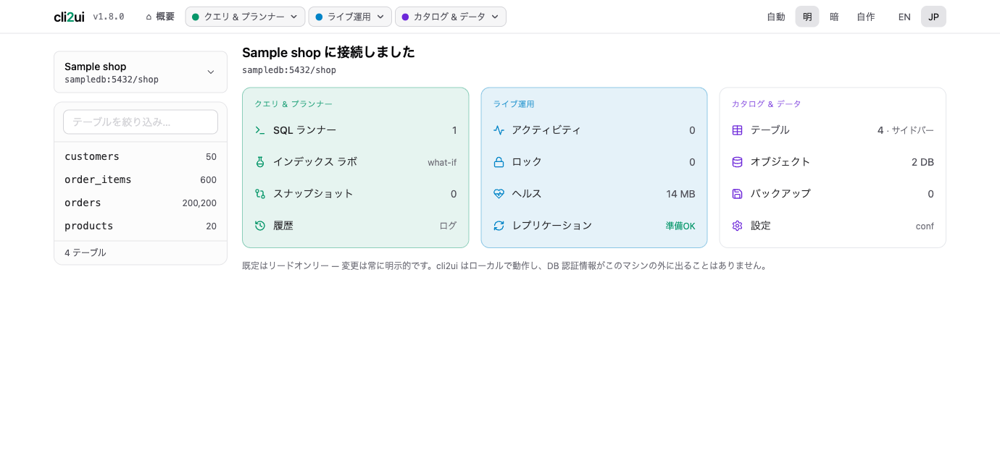
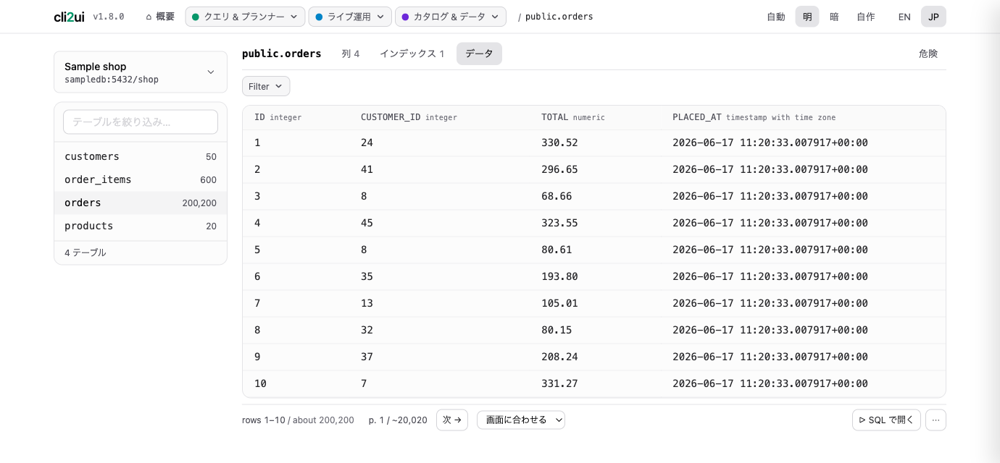
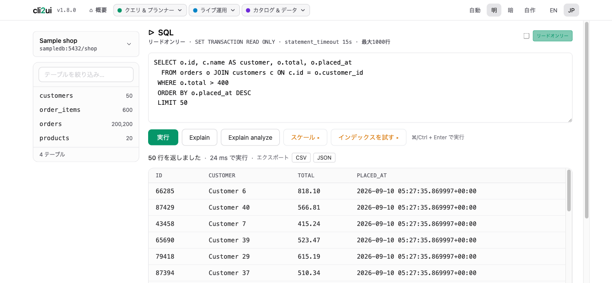

うろ覚えの DB CLI コマンドを Web UI に。AIなし、魔法なし — psql の操作をクリックに変え、 すべて自分のマシン上で動きます。
対象は アプリ開発者・個人開発者 —— DBA ではありません。 コンセプトは 「やろうと決めて3分後にはテーブルを眺めている」。 インストールの長旅も、接続ウィザードの迷路も、入れ子ツリーの探索もなし。
毎回ググるコマンドを、ワンクリックに畳む。
psql -c "SELECT * FROM
pg_stat_activity"
pg_dump -t users mydb
SELECT
pg_terminate_backend(pid)
本物の DB クライアントが、自分のマシンで動く。



本物の DB クライアント風レイアウト。1仕事＝1パネル。
既定はリードオンリーのアドホッククエリ（READ ONLY + 文タイムアウト + 1000行上限）。明示オプトインの書込みモードはコミットしますが、毎回 DB 全体の安全スナップショットで保護されます。
実行計画を保存し、インデックス追加の前後など2つを差分表示。計画をメモ帳にコピペして見比べる作業から解放されます。
pg_stat_activity から実行中クエリと接続を表示。ワンクリックで cancel / kill。
ロック待ちのセッションを保持側（pg_blocking_pids）とペアで表示。ブロッカーをワンクリックで cancel / kill。
破壊的・構造的な変更の前に自動でテーブルスナップショット。アップロードしたダンプの復元は、メモリに溜め込まずクライアントツールへストリーミング。
準備状況チェック（wal_level / max_wal_senders）+ WAL 位置、接続中のスタンバイ、スロットの作成 / 削除。
統計ベース（スキャンなし）のクエリでテーブルの無駄領域を推定。dead-rows / vacuum カードの隣に表示。
データベース・スキーマ・ロール（\l \dn \du）をリードオンリーで一覧。reload / restart バッジ付きの postgresql.conf エディタも。
実行した SQL をステータス・行数・所要時間つきで記録。ワンクリックで再オープンして再実行。
制約こそがプロダクト。
API キー管理に加え、スキーマを第三者へ送ること自体が、想定ユーザーにとっては論外です。クリックしたコマンドだけを、推測なしで正確に実行します。
DB 接続情報を預かった瞬間、責任と暗号化の話がプロジェクトを飲み込みます。ローカル完結だから誠実 —— DB 認証情報がネットワーク外に出ることはありません。
| レイヤ | 採用 |
|---|---|
| フロント | htmx + Alpine.js |
| バックエンド | Django |
| 管理用DB | SQLite |
| インフラ | Docker |
接続フォームは同梱のサンプル DB を指す状態で初期入力済み。Connect を押せば、もうテーブルを眺めています。
⚠️ ローカル完結の設計で認証はありません。localhost か信頼できるネットワーク内で動かし、公開インターネットには絶対に晒さないでください。